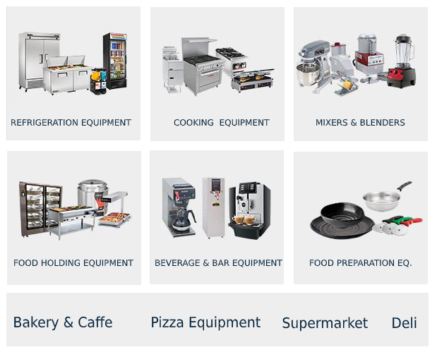

Buy Restaurant Equipment NYC
Buy Restaurant Equipment Subtitle
Some content text goes here: Our products are all manufactured by the most trusted vendors in the industry, making us a leading name in restaurant supplies and equipment in the NYC area. Whether you’re browsing supplies for your new café, or you’re ready to equip your bakery with a new commercial oven, you’ll be pleased with the quality and service you’ll receive from Restaurant Equipment NYC.
We have taken out many Restaurants that have closed down or sold off some of their equipment, Large and Small Food Service Operations. From Deli's, Catering, Bakeries, Chinese Restaurants, Pizza Places, Tavern's, Fast Food Operations, Ice Cream Stores, Liquor Stores, Nursing Homes, Schools, Meat & Fish Outlets, Cookie Retail Stores, and many more...
